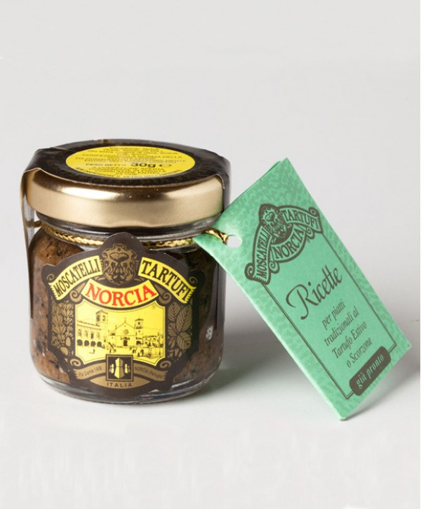

Tartufi estivi grattugiati già pronti
Tuber aestivum Vitt. Tartufo estivo grattugiato, sale e olio extravergine d'oliva: su pasta, bruschette e frittate, senza cuocerlo.
30 g · 7,00 €50 g · 12,00 €80 g · 16,00 €130 g · 25,00 €170 g · 38,00 €
a partire da7,00 €